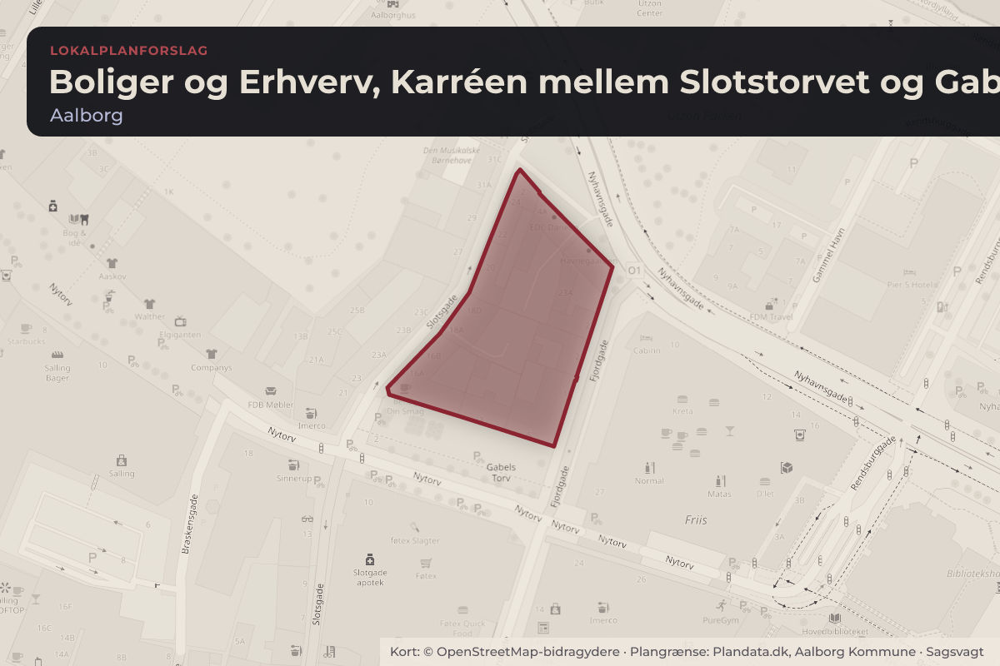
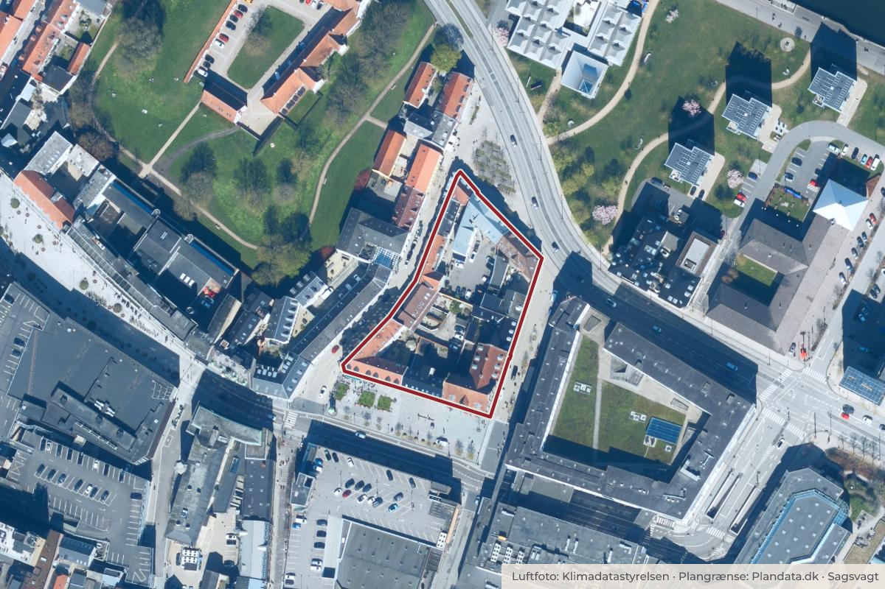

Besluttet 15. september, Teknik- og Miljøudvalget, Aalborg
Godkendelse af Lokalplan 1-1-155 Boliger og Erhverv, Karréen mellem Slotstorvet og Gabels Torv, Aalborg Midtby (1. forelæggelse)
Teknik og Miljø indstiller, at byrådet godkender • forslag til Lokalplan 1-1-155, • at der ikke laves en miljørapport, og • at forslaget sendes i offentlig høring i minimum 4 uger.
BoligerByggeri og lokalplanerErhverv og job

Kort: © OpenStreetMap-bidragydere. Plangrænse: Plandata.dk, Aalborg Kommune.

Kort fortalt
- Forslaget
- Forslag til Lokalplan 1-1-155
- Der ikke laves en miljørapport
- Forslaget sendes i offentlig høring i minimum 4 uger.
- Hvem
- Teknik- og Miljøudvalget, Aalborg Kommune
- Hvornår
- Tirsdag 15. september 2026
- Status
- Besluttet. Anbefales. Læs sagsbeskrivelsen til punkt 9 (PDF).Beslutningen er forkortet her. Læs hele beslutningen
Hvad kan du gøre?
- Hold øje med høringen
- Forslaget lægger op til en offentlig høring. Når den åbner, kan alle sende et høringssvar på aalborg.dk.
Læs hele sagen Kommunens egen tekst
Indstilling
Teknik og Miljø indstiller, at byrådet godkender
• forslag til Lokalplan 1-1-155,
• at der ikke laves en miljørapport, og
• at forslaget sendes i offentlig høring i minimum 4 uger.
Beslutning
Anbefales.
Tobias Bøgeskov Eriksen og Daniel Borup var fraværende.
Læs sagsbeskrivelsen til punkt 9 (PDF)
Bilag
Kilde: Aalborg Kommune, Teknik- og Miljøudvalget, referat fra mødet tirsdag 15. september 2026, punkt 9. Læs den originale sag hos kommunen.